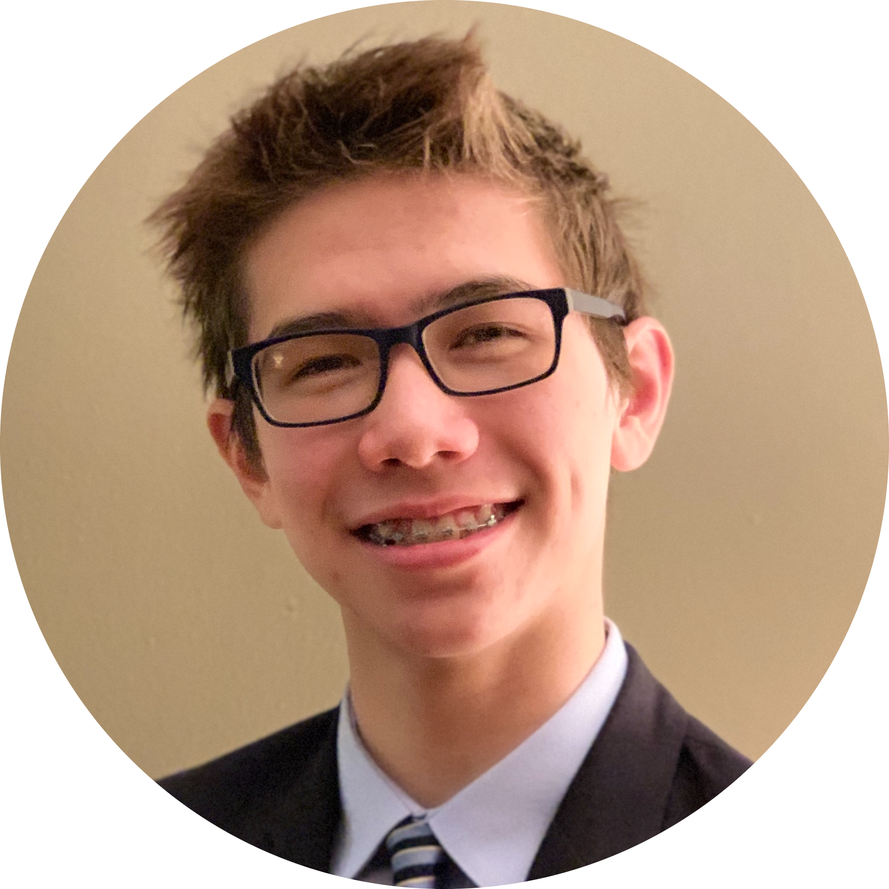

Nathan Cain
Computer Science Junior at Texas A&M

 I am an Aggie engineer seeking a full-time SWE position for the Spring or Summer of 2024. I plan to graduate from Texas A&M in 2024 with a B.S. in Computer Science. My current primary interests are Software Engineering, Information Security, and Cybersecurity! In my free time, I enjoy swimming and hiking.
Currently, I am interested in Software Engineering and Cybersecurity. Writing basic programs and learning through simple exercises sparked my passion for computer science. As the programs got more advanced and impactful, I realized I had found something that incorporated problem-solving, creativity, organization, and collaboration in a fast, immersive, and relevant field, which ultimately led to my decision to pursue computer science as my major. A few semesters ago, I participated in a beginner's Hack The Box competition, which exposed me to the vast field of Cybersecurity. Since then, I have continued to pursue a path in cybersecurity.
Edited by Nathan Cain - 2023